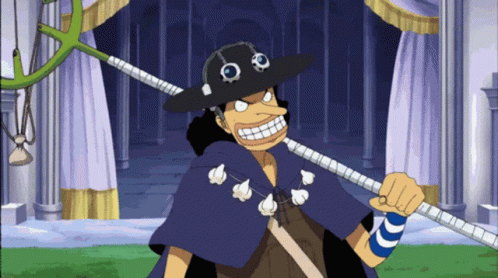
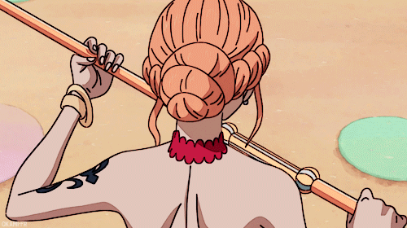
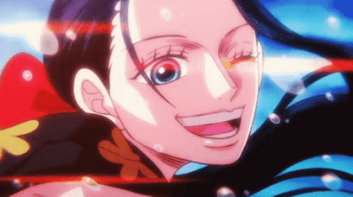

-
Monkey D. Luffy

Monkey D. Luffy, commonly known as "Straw Hat Luffy" or simply "Straw Hat", is the founder, captain, and strongest combatant of the increasingly infamous and powerful Straw Hat Pirates. He fearlessly pursues the legendary treasure of the late Gol D. Roger in order to become the new Pirate King and reach a further, untold dream (currently known to only his crew and closest friends). He believes that being the Pirate King means having the most freedom in the world.
Born on Dawn Island, Luffy is the son of Revolutionary leader Monkey D. Dragon and grandson of the Marine hero Monkey D. Garp and as such is a member of the Clan of D. Most of his childhood was shaped by Garp and Curly Dadan, under whose care he befriended and swore brotherhood to the late Portgas D. "Fire Fist" Ace and "Flame Emperor" Sabo. However, he draws his greatest inspiration from the pirate "Red-Haired" Shanks, who (unwittingly) enabled him to eat the Devil Fruit that turned his body into rubber, sacrificed an arm to save his life, and gifted his signature straw hat as a symbol of their vow to reunite someday, after Luffy became a great pirate.
As a pirate, Luffy has actively opposed countless regional, national, and global powers, beginning with several established East Blue pirates and extending to the Marines, the Seven Warlords of the Sea, Cipher Pol, the World Nobles, and even the Four Emperors of the New World. Despite his young age and relatively short career, he has triumphed over a majority of these, successfully invading and indirectly causing the annihilation of Enies Lobby, escaping the impregnable Impel Down, enabling several key developments in the Summit War of Marineford, and defeating three Warlords and an Emperor in direct combat. At the same time, he carries a great penchant for attracting friends and allies; in addition to personally engaging every member of his crew, he has earned regard and gratitude among many nations, fellow pirates, the Revolutionary Army, and even several Marines.
Luffy has gained wide infamy through his accomplishments, heritage, and general recklessness, drawing many large bounties as well as the focused hostility of the World Government, Marine Headquarters, and Fleet Admiral Sakazuki in particular. Currently, he is recognized as a central member of the Worst Generation, the unwilling leader of the seven-crew Straw Hat Grand Fleet, and in wake of defeating Kaidou during the Raid on Onigashima one of the Four Emperors, with a bounty of Beli3,000,000,000. Upon the awakening of the Gomu Gomu no Mi after centuries, Luffy is also heralded by a few as the second coming of JoyBoy.
- Role: Captain
- Bounty: 3,000,000,000 Beli
- Haki: Advanced Conquerors Haki, Advanced Armament Haki, Advanced Observation Haki
- Technique: Free Style
- Power: Mythical Zoan: Human-Human Fruit, Model: Nika
- Dream: To become the "Pirate King"
-
Roronoa Zoro

Roronoa Zoro, also known as "Pirate Hunter" Zoro, is a main combatant of the Straw Hat Pirates, one of their two swordsmen, one of the Senior Officers of the Straw Hat Grand Fleet, and is publicly recognized as the right-hand man and number two of his crew's captain Monkey D. Luffy. Formerly a bounty hunter, he is the second member of Luffy's crew and the first to join it, doing so in the Romance Dawn Arc.
Born in the East Blue, Zoro is the son of Tera and Roronoa Arashi, the grandson of Shimotsuki Furiko and Roronoa Pinzoro, and the grandnephew of Shimotsuki Ushimaru, making him a descendant of both the Shimotsuki Family of Wano Country and the legendary samurai, Shimotsuki Ryuma. As a master of Three Sword Style, a swordsmanship style which he created during his childhood training in Shimotsuki Village, Zoro is one of the three most powerful combatants of the Straw Hats, alongside Luffy and Sanji, who are referred to as the "Monster Trio". His dream is to become the greatest swordsman in the world, in order to honor a promise he made to his deceased childhood friend and distant cousin Kuina.
In addition to his infamy as one of the Straw Hats and as a former bounty hunter, his sizeable bounty upon arriving at the Sabaody Archipelago caused Zoro, along with Luffy to be included among the eleven "Super Rookies", pirates who simultaneously reached the Red Line with bounties of over Beli100,000,000 shortly before the Summit War. He, the other ten Super Rookies, and Marshall D. Teach would go on to be referred to as the "Worst Generation."
Zoro gained his first bounty of Beli60,000,000 after the Arabasta Arc. It later increased to Beli120,000,000 after the Enies Lobby incident, then again to Beli320,000,000 after the Dressrosa Arc. Following the Raid on Onigashima, his bounty was increased to Beli1,111,000,000.
- Role: Swordsman
- Bounty: 1,111,000,000 Beli
- Haki: Advanced Conquerors Haki, Advanced Observation Haki, Armament
- Technique: Three-Sword Style
- Weapon: Wado Ichimonji, Sandai Kitetsu, and Enma
- Dream: To be "The World's Greatest Swordsman"
-
Sanji

"Black Leg" Sanji, born as Vinsmoke Sanji, is the cook of the Straw Hat Pirates and one of the Senior Officers of the Straw Hat Grand Fleet. He is the fifth member of the crew and the fourth to join, doing so at the end of the Baratie Arc.
Born as the third son and fourth child of the Vinsmoke Family (thus, making him a former prince of the Germa Kingdom), he disowned his family twice, once in his youth and again after reuniting with them as an adult. After fleeing the Vinsmokes as a child, he eventually entered the care of Zeff as the sous chef of the Baratie, where he would remain until he met Monkey D. Luffy, who convinced him to join his crew.
His dream is to find the rumored chef's paradise, All Blue, which is where the East Blue, West Blue, North Blue, and South Blue meet, along with their wildlife. He is one of the top three fighters of the Straw Hats, alongside Luffy and Zoro, who are referred to as the "Monster Trio".
He first gained a bounty of Beli77,000,000 for his role in the raid on Enies Lobby. It increased to Beli177,000,000 after the Dressrosa Arc, but the condition of his bounty was changed to Only Alive due to his biological father's interference. After he escaped from Big Mom's territory, his bounty condition was reverted back to Dead or Alive (with the Vinsmoke name despite his renouncing it), and its value increased to Beli330,000,000. Following the Raid on Onigashima, his bounty was increased to Beli1,032,000,000.
- Role: Cook
- Bounty: 1,032,000,000 Beli
- Haki: Armament Haki, Observation Haki
- Technique: Black Leg Style
- Power: Modified Human
- Dream: Find the "All Blue"
-
Jinbe

"Knight of the Sea" Jinbe is the helmsman of the Straw Hat Pirates and one of the Senior Officers of the Straw Hat Grand Fleet. He is the tenth member of the crew and the ninth to join, doing so during the Wano Country Arc.
Jinbe is a whale shark fish-man and a powerful master of Fish-Man Karate. His dream is to fulfill his former captain Fisher Tiger's dying wish of coexistence and equality between humans and fish-men. He was a member of the Sun Pirates, eventually becoming its second captain after the death of their original captain, Tiger. He eventually became one of the Seven Warlords of the Sea, though he resigned during the Summit War of Marineford. Vegapunk later cloned Jinbe as one of the Seraphim, S-Shark, to replace the Warlords.
Prior to and amidst said war, Jinbe befriended Monkey D. Luffy, and two years later allied with him and his crew to prevent the New Fish-Man Pirates' coup d'état against the Ryugu Kingdom's Neptune Royal Family. Luffy thereafter invited him to join the Straw Hat Pirates, but Jinbe held it off until severing ties with Big Mom during the Whole Cake Island Arc. After staying behind in Totto Land to protect the Sun Pirates from Big Mom's wrath, Jinbe returned to the Straw Hats during the Wano Country Arc, officially announcing his status as a member of the crew.
He first gained a bounty of Beli76,000,000 due to him being a member of the Sun Pirates. It was later increased to Beli250,000,000 after Jinbe became the new captain of the Sun Pirates before it was frozen after he joined the Seven Warlords. Upon resigning his position as a Warlord at the Summit War of Marineford, his bounty was reinstated at Beli438,000,000. Following the Raid on Onigashima, his bounty was increased to Beli1,100,000,000.
- Role: Helmsman
- Bounty: 1,100,000,000 Beli
- Haki: Armament Haki, Observation Haki
- Technique: Fish-Man Karate
- Dream: Peace between Fish-Men and Humans
-
Usopp
"God" Usopp is the sniper of the Straw Hat Pirates and one of the Senior Officers of the Straw Hat Grand Fleet. He is the fourth member of the crew and the third to join, doing so at the end of the Syrup Village Arc. Although he left the crew during the Water 7 Arc, he rejoined at the end of the Post-Enies Lobby Arc.
Usopp is the son of Yasopp and the late Banchina. He was born and raised in Syrup Village, serving as "captain" of the Usopp Pirates and being Kaya's close friend. After working with the Straw Hats to defeat Kuro and the Black Cat Pirates, he was invited to join the crew. Despite his usual cowardice, Usopp dreams of becoming a brave warrior of the sea just like his father and lives every day in pursuit of living up to this dream.
He first gained a bounty of Beli30,000,000 under his Sogeking Persona after the incident at Enies Lobby. After the Dressrosa Arc, Usopp gained a bounty of Beli200,000,000 under his own name. Following the Raid on Onigashima, his bounty was increased to Beli500,000,000.
- Role: Sniper
- Bounty: 500,000,000 Beli
- Haki: Observation Haki
- Technique: Marksmanship
- Weapon: Slingshot
- Dream: To be a "Brave Warrior of the Sea"
-
Nami
"Cat Burglar" Nami is the navigator of the Straw Hat Pirates and one of the Senior Officers of the Straw Hat Grand Fleet. She is the third member of the crew and the second to join, doing so during the Orange Town Arc. She is the adoptive sister of Nojiko after the two were orphaned and taken in by Bell-mère.
She was formerly a member of the Arlong Pirates who initially joined the Straw Hats to rob them in order to buy back her village from Arlong, and served as a supporting antagonist during the Baratie Arc. However, she legitimately joined the Straw Hats after they defeated Arlong. Her dream is to make a map of the entire world.
She first gained a bounty of Beli16,000,000 following the raid on Enies Lobby. It later increased to Beli66,000,000 after the Dressrosa Arc. Following the Raid on Onigashima, her bounty was increased to Beli366,000,000.
- Role: Navigator
- Bounty: 366,000,000 Beli
- Power: Control of the Weather, Zeus
- Weapon: Clima-Tact
- Dream: To "Map the World"
-
Nico Robin
Nico Robin, also known by her epithet "Devil Child" and the "Light of the Revolution", is the archaeologist of the Straw Hat Pirates and one of the Senior Officers of the Straw Hat Grand Fleet. She is the seventh member of the crew and the sixth to join, doing so at the end of the Arabasta Arc. She temporarily left the crew during the Water 7 Arc but rejoined during the Enies Lobby Arc.
Born into a family of archaeologists, Robin is the daughter of Nico Olvia. Robin ate the Hana Hana no Mi at a young age, giving her the power to reproduce her body parts (or her entire body) on any surface at will. As the sole survivor of the destroyed West Blue island Ohara, she is currently one of only two people in the world known to have the ability to read and decipher Poneglyphs, a skill which is considered forbidden and threatening to the World Government.
She acted as the vice president of Baroque Works as "Miss All Sunday", serving and partnering herself directly with the organization's president; the ex-Warlord: Crocodile, who operated under the codename "Mr. 0". She was a secondary antagonist of the Arabasta Saga, before joining the Straw Hats. Her dream is to find the Rio Poneglyph which tells the true history of the world, specifically the Void Century.
She gained a bounty of Beli79,000,000 at the age of 8 due to her ability to read poneglyphs after the destruction of Ohara. It later increased to Beli80,000,000 after the Straw Hats invaded Enies Lobby to rescue her and escape. After the Dressrosa Arc, it was increased to Beli130,000,000. Following the Raid on Onigashima, her bounty was increased to Beli930,000,000.
- Role: Archaeologist
- Bounty: 930,000,000 Beli
- Technique: Fish-Man Karate
- Power: Paramecia: Flower-Flower Fruit
- Dream: To Discover the True History
-
Tony Tony Chopper

Tony Tony Chopper, also known as "Cotton Candy Lover" Chopper, is the doctor of the Straw Hat Pirates and one of the Senior Officers of the Straw Hat Grand Fleet. He is the sixth member of the crew and the fifth to join, doing so at the end of the Drum Island Arc. He was temporarily forced to join the Foxy Pirates during the Long Ring Long Land Arc, but was quickly returned to Luffy's crew.
Chopper is a reindeer that ate the Hito Hito no Mi, a Devil Fruit that allows its user to transform into a human hybrid at will. He was taught medicine on Drum Island by his two parental figures, Doctors Hiriluk and Kureha. Chopper aims to travel all across the world in the hopes of accomplishing his dream of being able to cure any disease.
Chopper gained his first bounty of Beli50 after the incident at Enies Lobby, having been mistaken for the Straw Hats' pet. After the Dressrosa Arc, it was increased to Beli100, then to Beli1,000 following the Raid on Onigashima.
- Role: Doctor
- Bounty: 1,000 Beli
- Technique: Kung Fu, Free Style
- Power: Zoan: Human-Human Fruit, Model: Human
- Dream: To "Cure All Diseases"
-
Brook

"Soul King" Brook is the musician of the Straw Hat Pirates, one of their two swordsmen, and one of the Senior Officers of the Straw Hat Grand Fleet. He is the ninth member of the crew and the eighth to join, doing so at the end of the Thriller Bark Arc.
Brook ate the Yomi Yomi no Mi, which allowed him to return to life after death once. Brook eventually learned to tap deeper into the powers of his Devil Fruit, giving him significant control over his own soul and the souls of others.
Originally a member of the Rumbar Pirates, he died and was resurrected through the power of the Yomi Yomi no Mi. However, due to the amount of time it took for his soul to find his body, it was reduced to a skeleton, keeping only his afro intact. Brook drifted alone in the Florian Triangle for 50 years, eventually meeting Luffy and serving as the Straw Hats' ally during the Thriller Bark Arc before officially joining the crew. His dream is to reunite with his old friend, Laboon, at Reverse Mountain, where he resides with Crocus.
He first gained a bounty of Beli33,000,000 during his time as a member of the Rumbar Pirates. It later increased to Beli83,000,000 after the Dressrosa Arc. Following the Raid on Onigashima, his bounty was increased to Beli383,000,000.
- Role: Musician
- Bounty: 383,000,000 Beli
- Technique: Classical fencing, iaidō
- Power: Paramecia: Revive-Revive Fruit
- Dream: To Reunite with Laboon
-
Franky

"Iron Man" Franky is the shipwright of the Straw Hat Pirates and one of the Senior Officers of the Straw Hat Grand Fleet. He is the crew's eighth member and the seventh to join, doing so at the end of the Post-Enies Lobby Arc.
Born "Cutty Flam", he chose to go by his nickname of "Franky" until eventually permanently discarding his true name per the request of Iceburg to hide his identity. Originally from the South Blue, Franky was abandoned by his family as a ten-year-old, eventually making his way to Water 7. There, he came to be a member of Tom's Workers, until an incident resulted in his body being heavily damaged and requiring him to augment himself into a cyborg. Upon returning to Water 7, he became the leader of the Franky Family, a group of ship dismantlers and bounty hunters.
Franky and his followers were originally enemies of the Straw Hats at the beginning of the Water 7 Arc, until circumstances forced them to become allies at the end of the same arc and the Enies Lobby Arc. Due to this, he is the secondary antagonist of the first half of the Water 7 Arc. Franky's dream is to create a ship and circumnavigate the world with it, and he built the Thousand Sunny and joined the Straw Hat Pirates to fulfill his dream.
He gained a bounty of Beli44,000,000 for his involvement at the Enies Lobby Incident. It later increased to Beli94,000,000 after the Dressrosa Arc. Following the Raid on Onigashima, his bounty was increased to Beli394,000,000.
- Role: Shipwright
- Bounty: 394,000,000 Beli
- Weapon: Cyborg Body
- Dream: Sail to the End of the World